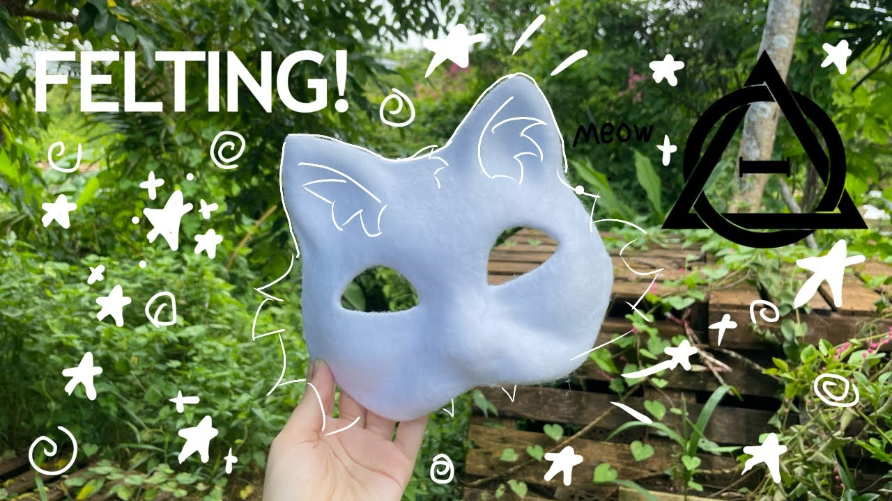

Створюємо свій образ
Повний комплект для квадробіки зазвичай складається з маски, лапок на руки та хвоста. Але пам'ятай: ти сам вирішуєш, що тобі потрібно. Можна тренуватися взагалі без спорядження, або ж створити лише одну деталь, яка найбільше відгукується твоєму теріотипу. Головне — твій комфорт.

Магія створення маски
Створення маски власноруч — це один із найцікавіших етапів у квадробіці. Круто робити її самостійно, адже це медитативний процес і можливість виразити свою унікальність. Твоя маска — це твоє друге "Я". Правильно підібрані кольори, форма вушок та вираз очей роблять твій образ неповторним, і саме такий кастомний крафт завжди збирає найбільше компліментів на сходках.
Часто для масок використовують:
- Основа: готові пластикові форми з пап'є-маше, картон або EVA-піна.
- Покриття: штучне хутро різної довжини, фетр або фліс.
- Розпис: акрилові фарби (вони яскраві, швидко сохнуть і не змиваються під дощем).
- Очі: спеціальна пластикова канва (сітка), яку розмальовують маркерами. Вона приховує людські очі, але дозволяє добре бачити.
- Інструменти: термопістолет з гарячим клеєм, ножиці, канцелярський ніж.
Відео-туторіал зі створення маски вовка:
Дивись покроковий процес, щоб надихнутися на власний шедевр:
Лапки та Хвостики
Лапки на руки (Амортизація та стиль)
Лапки не лише доповнюють образ, а й виконують функцію захисту під час "лендінгу" (приземлення). Їх також дуже легко зробити самостійно. За основу беруть міцні рукавички (часто будівельні або велосипедні без пальців). На долоні кріплять об'ємні подушечки, вирізані з фетру, EVA-піни або вилиті з силікону.
Зовні лапки обшивають штучним хутром. А ще дуже крутою і затишною альтернативою є використання техніки в'язання гачком або спицями: створені з м'якої плюшевої пряжі мітенки з вив'язаними подушечками виглядають просто неймовірно!
Хвіст (Баланс та динаміка)
Хвостик додає динаміки твоїм стрибкам. Зазвичай його шиють з довгого прямокутника штучного хутра, який зшивають у "трубу". Щоб він не був занадто важким і гарно рухався в повітрі, всередину нещільно набивають холлофайбер або синтепон. До основи пришивають міцний карабін, за допомогою якого хвіст легко чіпляється за шлейку штанів або спеціальний ремінь.